Dain Kennison
Strategy • Design • Technology
I’m Dain Kennison—a name my parents drew from Tolkien’s The Hobbit—and I’ve spent over 25 years in branding, product/UX/UI design, and web/app development. I am currently consulting as a Creative Technologist. Over the course of my career, and as Head of Design at La Visual, I have been fortunate enough to collaborate with dozens of brands, big and small, crafting solutions that blend creativity, technology, and purpose. Above all, I’m a sinner saved by grace, a follower of Jesus Christ, striving to reflect His love in my work and life. I recently moved from Southern California to Boise, Idaho with my wonderful wife and four children.
